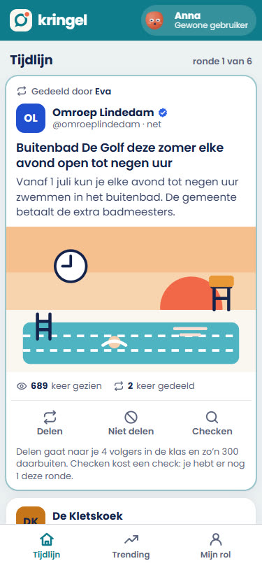
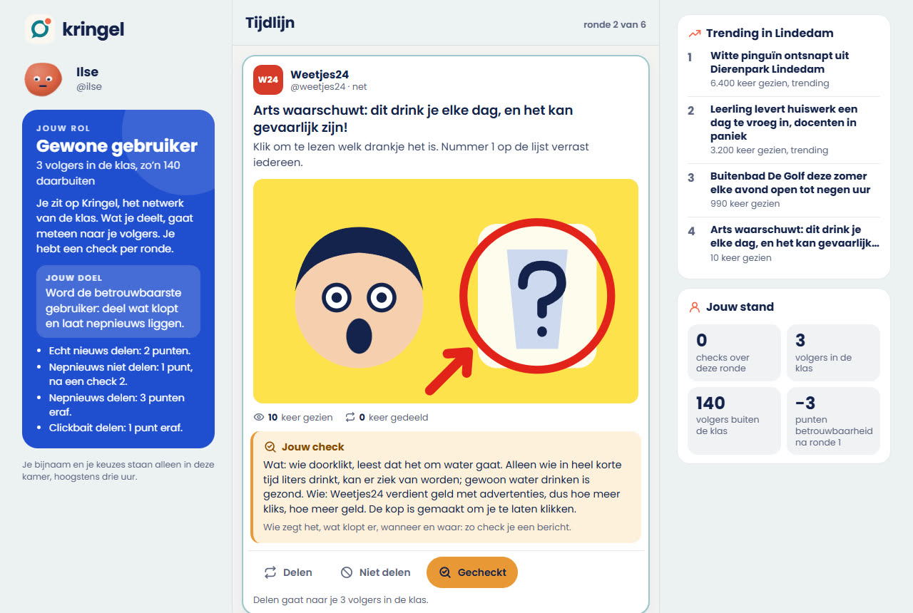
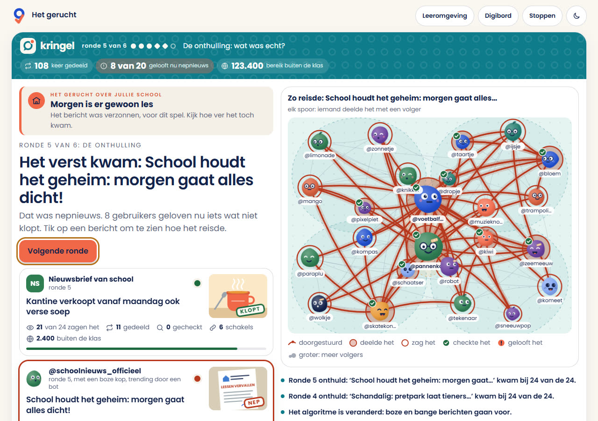
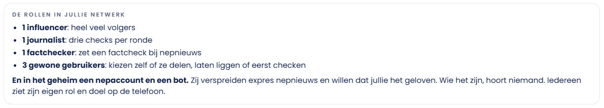
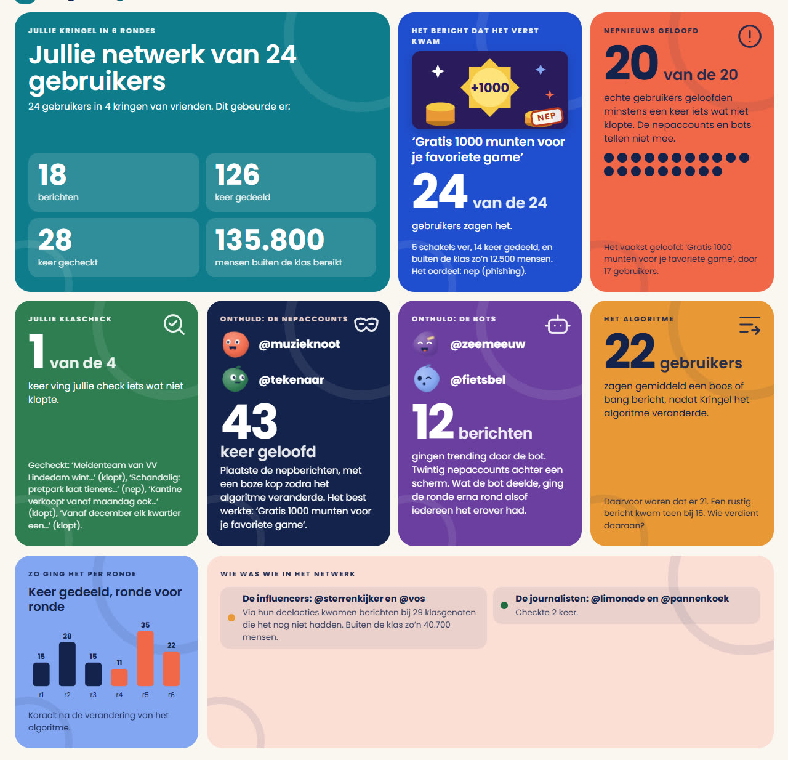
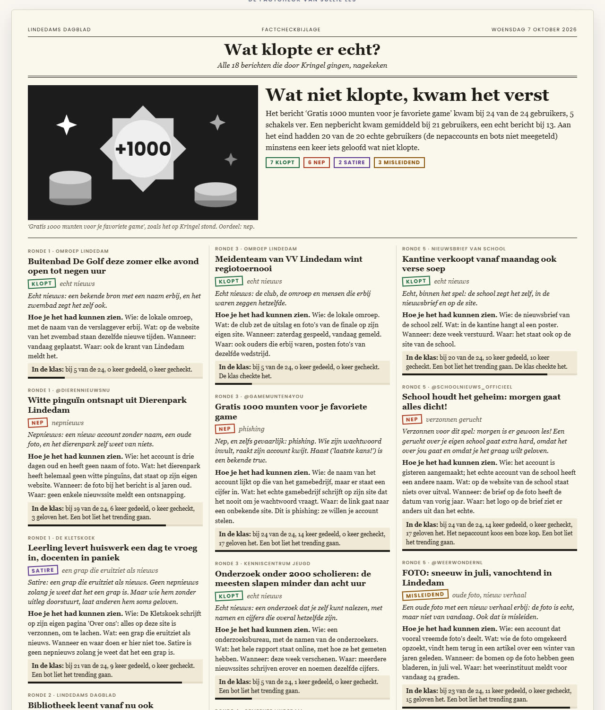

een les over nepnieuws
Nepnieuws in de klas, met Het gerucht
Je klas wordt een sociaal netwerk. Leerlingen delen, laten liggen of checken berichten op hun eigen telefoon, en zien op het digibord hoe een gerucht van telefoon naar telefoon reist. Pas daarna geef je het de namen: nepnieuws, algoritme, filterbubbel. Een les van 50 minuten voor mens en maatschappij, burgerschap of Nederlands, van vmbo tot vwo.
- Wat: een klassikaal spel. Het digibord is Kringel, het netwerk van de klas; leerlingen doen mee op hun telefoon of laptop. Zonder apparaten speel je het aan het bord met handen opsteken.
- Tijd: 50 minuten: 10 minuten opstarten, ongeveer 25 minuten spelen (zes rondes), 15 minuten nabespreken en afsluiten.
- Groep: 12 tot 32 leerlingen. Op telefoons kan het al vanaf drie apparaten.
- Nodig: een digibord met internet, en per leerling een telefoon of laptop (of per tweetal één).
- Waar: meneergreidanus.nl/leermiddelen/gerucht.html. Gratis, zonder account. Alle berichten, accounts en plaatsen zijn verzonnen.
- Nepnieuws
- Een bericht dat eruitziet als nieuws, maar niet klopt.
- Misinformatie
- Onjuiste informatie die iemand verspreidt zonder te weten dat het niet klopt.
- Desinformatie
- Onjuiste informatie die iemand expres verspreidt, om te misleiden, geld te verdienen of onrust te stoken.
- Satire
- Een grap die eruitziet als nieuws. Geen nepnieuws zolang je weet dat het een grap is.
- Clickbait
- Een kop die je nieuwsgierig maakt zodat je klikt; het bericht zelf valt vaak tegen.
- Misleidend beeld
- Een echte foto met een verkeerd verhaal erbij, of een bewerkte foto.
- Algoritme
- De rekenregels van een app die bepalen welke berichten jij te zien krijgt.
- Filterbubbel
- Je ziet vooral wat lijkt op wat je al eerder zag of deelde.
- Echokamer
- Een groep waarin iedereen hetzelfde vindt en elkaar steeds gelijk geeft (havo en vwo).
- Bot en nepaccount
- Een programma of een account dat doet alsof het een gewoon mens is.
- Herhalingseffect
- Wat je vaak hoort, ga je eerder geloven, ook als het niet klopt (vwo).
- Factcheck
- Nagaan of een bericht klopt: wie zegt het, wat klopt er, wanneer was het, waar komt het vandaan.
Leerdoelen
Na deze les kunnen leerlingen:
- uitleggen hoe een bericht viraal gaat: wie deelt, stuurt het door naar al zijn volgers;
- het verschil noemen tussen echt nieuws, nepnieuws, satire, clickbait en een misleidende foto;
- een bericht checken met vier vragen: wie zegt het, wat klopt er, wanneer is het gebeurd, waar komt het vandaan;
- uitleggen wat een algoritme en een filterbubbel zijn, en waarom boze en bange berichten vaak verder komen;
- uitleggen wat bots en nepaccounts doen, en waarom ook gewone mensen nepnieuws verspreiden;
- (havo en vwo) het verschil uitleggen tussen misinformatie en desinformatie, en wat een echokamer is; (vwo) het herhalingseffect uitleggen.
De les past bij burgerschap en mediawijsheid, bij mens en maatschappij en maatschappijleer (media en democratie), en bij Nederlands (betrouwbaarheid van bronnen, leesvaardigheid).
Waarom zo
Over nepnieuws vertellen werkt matig: bijna elke leerling denkt dat hij het zelf wel doorheeft. In Het gerucht merken ze het eerst. Ze delen een bericht omdat een vriend het deelde, omdat de kop boos of grappig is, of omdat checken een beurt kost. Op het bord zien ze daarna hoe ver hun eigen keuze reikte. Pas dan geef je de begrippen. Dat maakt de nabespreking concreet: niet "mensen trappen erin", maar "wij trapten erin, en zo ging het".
Fouten maken mag, want er staat niets op het spel: de berichten zijn verzonnen en onschuldig. En omdat er in het geheim een nepaccount en een bot meespelen, ervaren leerlingen ook dat nepnieuws vaak een maker heeft met een doel.
Achtergrond voor jou
Waarom nepnieuws zo hard gaat. Nepnieuws is vaak nieuwer, verrassender en emotioneler dan echt nieuws. Een boos of bang bericht deel je sneller, en apps die willen dat je lang blijft kijken, laten juist zulke berichten vaker zien. Wat je vaak voorbij ziet komen, ga je eerder geloven. En wie in een groep zit waar iedereen hetzelfde deelt, hoort zelden iets anders.
Wie maakt het, en waarom. Om geld te verdienen (kliks en advertenties), om mensen op te lichten (een nep-winactie of phishing), om een mening of politieke boodschap te verspreiden, om onrust te stoken, of voor de grap. Lang niet iedereen die het deelt, doet dat expres: de meeste mensen geven het gewoon door.
Hoe check je een bericht. De vier vragen uit het spel: wie, wat, wanneer, waar. Aanvullend: kijk wat anderen over de bron zeggen, in plaats van alleen op de site zelf te blijven; zoek een foto terug met omgekeerd zoeken (bijvoorbeeld Google Lens of TinEye); en kijk bij factcheckers, zoals Nieuwscheckers van de Universiteit Leiden.
Voorbereiding (10 minuten, de dag ervoor)
- Open meneergreidanus.nl/leermiddelen/gerucht.html op je laptop en probeer het een keer met twee telefoons: maak een code, doe mee op je telefoon, en kijk hoe een bericht verschijnt.
- Kies hoe je speelt: op telefoons (het beste) of aan het bord (handen opsteken, zonder apparaten). Zijn er te weinig telefoons, laat dan tweetallen samen een apparaat gebruiken.
- Kies het niveau. De berichten zijn voor iedereen hetzelfde; op havo en vwo komen in de nabespreking meer begrippen aan bod.
- Kies de verrassingen: het algoritme verandert (ronde 4) en een gerucht over jullie school (ronde 5). Allebei aan is het sterkst. Zit er een leerling in de klas voor wie een gerucht over school gevoelig ligt, zet die tweede dan uit; er komt dan een ander nepbericht.
- Leerlingen doen mee via meneergreidanus.nl/q, of in de leeromgeving bij "Code van je docent of van het bord". Ze hebben alleen de code nodig.
Lesverloop (50 minuten)
| Tijd | Wat | Wat jij doet en zegt |
|---|---|---|
| 5 min | Opening | Vraag: "Wie heeft weleens iets gedeeld of doorgestuurd dat later niet bleek te kloppen?" Laat handen opsteken, vraag naar een voorbeeld. Leg nog niets uit. |
| 5 min | Start het spel | Maak de code en laat iedereen meedoen. Op het bord staat welke rollen er in het netwerk zitten. Zeg: "Je rol staat op je telefoon. Hou hem geheim. Praat niet over wat je ziet: kijk zelf." Open Kringel. |
| 12 min | Ronde 1 tot en met 3 | Elke ronde komen er drie berichten in omloop. Na elke ronde onthult het bord wat elk bericht was en hoe ver het kwam. Stel per ronde één vraag: "Welk bericht kwam het verst, en waarom?" |
| 4 min | Ronde 4: het algoritme | Kringel laat vanaf nu vooral boze en bange berichten zien. Vraag eerst: "Wat denk je dat er nu gebeurt? Wie heeft daar baat bij?" |
| 4 min | Ronde 5: het gerucht | Er gaat rond dat morgen alle lessen uitvallen. Na de ronde zeggen het bord en de telefoons dat het niet klopt. Zeg dat ook zelf, hardop. |
| 4 min | Ronde 6 | De laatste ronde, met alles wat de klas nu weet. Merk je dat er meer gecheckt wordt? Benoem het. |
| 12 min | Nabespreking | Het eindscherm: de terugblik met de grote cijfers, de onthulling van het nepaccount en de bot, en de factcheckpagina. Gebruik de vragen bij stap 9. |
| 4 min | Afsluiting | Exitkaartje: "Schrijf de vier checkvragen op, en een bericht dat je deze week zou checken voordat je het deelt." |
Wat leerlingen zien
Op de telefoon ziet Kringel eruit als een echte app: een tijdlijn met posts, wie het deelde, en de knoppen Delen, Niet delen en Checken. Na een check klapt de aanwijzing open: wie, wat, wanneer, waar. Op een laptop is het een site met drie kolommen: je rol en doel, de tijdlijn, en wat er trending is.



De rollen
Iedereen krijgt een rol met een eigen doel. Op het bord staat bij de start hoeveel van elke rol er zijn. Twee rollen zijn geheim: het bord zegt wel dat ze meedoen, maar niet wie het zijn.

| Rol | Doel | Bijzonder |
|---|---|---|
| Gewone gebruiker | De betrouwbaarste gebruiker worden. | Een paar volgers en een check per ronde. |
| Influencer | Het bereik goed gebruiken. | Bijna de hele klas volgt hem; een fout komt overal terecht. |
| Journalist | Echt nieuws verder helpen en nepnieuws tegenhouden. | Drie checks per ronde. |
| Factchecker | Nepnieuws ontmaskeren. | Mag alles checken en zet een factcheck bij een bericht. Die ziet iedereen pas de volgende ronde. |
| Nepaccount (geheim) | Zo veel mogelijk klasgenoten het nepnieuws laten geloven. | Kiest elke ronde de kop: rustig, boos of bang. |
| Bot (geheim) | Het nepaccount helpen. | Wat hij deelt, gaat de volgende ronde trending. |
Punten voor betrouwbaarheid: echt nieuws delen levert 2 punten op, nepnieuws niet delen 1 punt (na een check 2), nepnieuws delen kost 3 punten en clickbait delen 1. Een factcheck bij nepnieuws levert 4 punten op. Het nepaccount en de bot scoren met het aantal keer dat hun nepnieuws geloofd wordt. Een leerling ziet zijn betrouwbaarheid pas na een ronde, zodat hij tijdens een ronde niet kan afleiden of een keuze goed was.
Tijdens het spel
- Laat het stil zijn. Het spel werkt het best als leerlingen niet overleggen. Overleg komt in de nabespreking.
- Benoem wat je ziet, niet wie. "Er wordt veel gedeeld zonder te checken" in plaats van namen.
- Gebruik de onthulling. Na elke ronde staat er per bericht een stempel (klopt, nep, satire, misleidend). Tik het bericht aan dat het verst kwam: het bord speelt af hoe het van telefoon naar telefoon ging.
- Het gerucht over school komt in ronde 5. Zeg na die ronde zelf dat er morgen gewoon les is, ook al staat het op het bord.
Als er iets misgaat
- Een telefoon valt weg: de pagina opnieuw laden; de leerling komt terug in hetzelfde spel met dezelfde rol.
- Het bord herlaadt per ongeluk: het spel biedt aan om verder te gaan waar je was; de ronde die bezig was, begint opnieuw.
- Te weinig apparaten: tweetallen op een apparaat, of speel aan het bord met handen opsteken. Het bord rekent dan uit hoe ver alles komt in een netwerk met evenveel gebruikers als je klas.
- Een bijnaam die niet kan: haal de leerling in de lobby weg met het kruisje; hij kan opnieuw meedoen met een andere naam.
De nabespreking
Het eindscherm heeft drie delen. De terugblik met grote cijfers: het bericht dat het verst kwam, hoeveel leerlingen nepnieuws geloofden, de beste checker, en de onthulling van het nepaccount en de bot. Het netwerk per bericht. En de factcheckpagina "Wat klopte er echt?", met per bericht het oordeel en hoe je het had kunnen zien. Die kun je printen als hand-out.


Naar emotie, nieuwsgierigheid, de influencer, de bot.
Een nieuw account, geen naam of foto, een boze kop, haast.
Hier komt uit dat checken tijd en moeite kost, en dat we vertrouwen op wie het deelde.
Aandacht is geld: hoe langer je kijkt, hoe meer advertenties.
We geloven sneller wat we graag willen; check bij de bron zelf: de site of de mentor.
Was het nepnieuws in het spel misinformatie of desinformatie? Allebei: het nepaccount maakte desinformatie, de klas verspreidde misinformatie. Zit jij in een echokamer? Hoe kom je daaruit?
Verschillen tussen niveaus
Een tweede les
- Terugblik (5 minuten). Wat weet je nog van Kringel? Noem de vier checkvragen.
- Zelf checken (20 minuten). Geef tweetallen de geprinte factcheckpagina en een paar berichten die je zelf kiest (uit de krant, of onschuldige voorbeelden van een factchecksite). Ze checken elk bericht met wie, wat, wanneer, waar, en zoeken een foto terug met omgekeerd zoeken.
- Je eigen tijdlijn (10 minuten). Wat zie jij op je eigen app, en waarom denk je dat het algoritme je dat laat zien? Laat ze twee dingen opschrijven, zonder hun scherm te laten zien.
- Afsluiten (5 minuten). Een afspraak met jezelf: wat check je voortaan voordat je iets doorstuurt?
Op de leeromgeving passen er goed bij: Twee kanten (feit en mening, argumenten afwegen) en de Vragenrace bij mens en maatschappij met het onderdeel media en nieuws. Die kun je in het klasoverzicht ook als opdracht klaarzetten.